前言
Android手机由于厂家未统一，以及某些厂家的标新立异，导致目前Android手机的分辨率和尺寸千奇百怪，无所不有。所以对Android手机的屏幕适配一直开发是一个大问题。要学习这方面的知识，并且掌握是Android开发的一个重头。
一、关于屏幕适配的dp、dpi、px
(一) 分辨率,屏幕大小,密度
1、分辨率。
分辨率就是手机屏幕的像素点数，一般描述成屏幕的“宽×高”，安卓手机屏幕常见的分辨率有480×800、720×1280、1080×1920、1440x2560的2K屏等。720×1280表示此屏幕在宽度方向有720个像素，在高度方向有1280个像素。
2、屏幕大小。
屏幕大小是手机对角线的物理尺寸，以英寸（inch）为单位。比如某某手机为“5寸大屏手机”，就是指对角线的尺寸，5寸×2.54厘米/寸=12.7厘米。
3、密度（dpi，dots per inch；或PPI，pixels per inch）。
从英文顾名思义，就是每英寸的像素点数，数值越高当然显示越细腻。假如我们知道一部手机的分辨率是1080×1920，屏幕大小是5英寸，你能否算出此屏幕的密度呢？中学的勾股定理派上用场啦！通过宽1080和高1920，根据勾股定理，我们得出对角线的像素数大约是2203，那么用2203除以5就是此屏幕的密度了，计算结果是440。440dpi的屏幕已经相当细腻了。
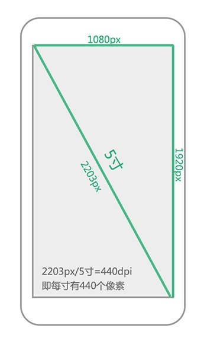
(二) 实际密度与系统密度
“实际密度”就是我们自己算出来的密度，这个密度代表了屏幕真实的细腻程度，如上述例子中的440dpi就是实际密度，说明这块屏幕每寸有440个像素。5英寸1080×1920的屏幕密度是440，而相同分辨率的4.5英寸屏幕密度是490。如此看来，屏幕密度将会出现很多数值，呈现严重的碎片化。而密度又是安卓屏幕将界面进行缩放显示的依据，那么安卓是如何适配这么多屏幕的呢？
其实，每部安卓手机屏幕都有一个初始的固定密度，这些数值是120、160、240、320、480，我们权且称为“系统密度”也称为“广义密度”。大家发现规律没有？相隔数值之间是2倍的关系。一般情况下，240×320的屏幕是低密度120dpi，即ldpi；320×480的屏幕是中密度160dpi，即mdpi；480×800的屏幕是高密度240dpi，即hdpi；720×1280的屏幕是超高密度320dpi，即xhdpi；1080×1920的屏幕是超超高密度480dpi，即xxhdpi。
安卓对界面元素进行缩放的比例依据正是系统密度，而不是实际密度。
将一定范围的屏幕密度的设备视为一个特定的密度，比如屏幕密度在240左右的设备视为高密度（hdpi），在320左右的视为超高密度（xhdpi）等。
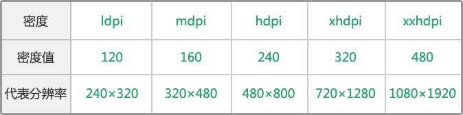
(三) dp、sp、px的区别
px：即像素，1px代表屏幕上一个物理的像素点；px单位不被建议使用，因为同样100px的图片，在不同手机上显示的实际大小可能不同，偶尔用到px的情况，是需要画1像素表格线或阴影线的时候，用其他单位如dp会显得模糊。
dp也可写为dip，即density-independent pixel。你可以想象dp更类似一个物理尺寸，比如一张宽和高均为100dp的图片在320×480和480×800的手机上“看起来”一样大。而实际上，它们的像素值并不一样。dp正是这样一个尺寸，不管这个屏幕的密度是多少，屏幕上相同dp大小的元素看起来始终差不多大。
sp：sp和dp很类似但唯一的区别是，Android系统允许用户自定义文字尺寸大小（小、正常、大、超大等等），所以目前主流应用字体大小已经改用dp，不用sp，省去用户手动调整字体适配的麻烦。
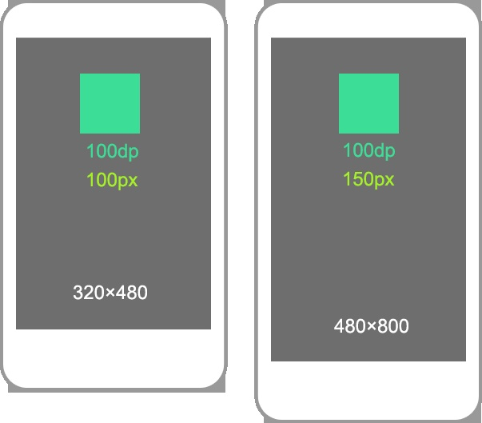
(四) 常规的安卓手机分辨率及其dpi和density的计算
查看一下现在Android Studio自带的模拟器设备：

手机屏幕的dpi和density的计算：
以Nexus5X为例：
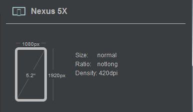
手机大小5.2英寸，分辨率为1080×1920，那么该手机屏幕的：
物理宽度：(1080/√￣(1080×1080+1920×1920))*5.2=2.55
像素密度dpi：1080/2.55=420px/英寸
密度density：420/160=2.625
(五) 转换公式
dp和px之间的换算：
dp=px * density
dp与px的换算要以系统密度为准
在安卓中，系统密度为160dpi的中密度手机屏幕为基准屏幕，即320×480的手机屏幕。在这个屏幕中，1dp=1px。
100dp在320×480（mdpi，160dpi）中是100px。那么100dp在480×800（hdpi，240dpi）的手机上是多少px呢？我们知道100dp在两个手机上看起来差不多大，根据160与240的比例关系，我们可以知道，在480×800中，100dp实际覆盖了150px。
中密度和高密度的缩放比例，720×1280的系统密度为320，320×480的系统密度为160，320/160=2，那么在720×1280中，1dp=2px。同理，在1080×1920中，1dp=3px。
ldpi:mdpi:hdpi:xhdpi:xxhdpi=3:4:6:8:12，我们发现，相隔数字之间还是2倍的关系。计算的时候，以mdpi为基准。比如在720×1280（xhdpi）中，1dp等于多少px呢？mdpi是4，xhdpi是8，2倍的关系，即1dp=2px。反着计算更重要，比如你用PhotoShop在720×1280的画布中制作了界面效果图，两个元素的间距是20px，那开发是多少dp呢？2倍的关系，那就是10dp！
实际程序中根据不同机型，可以用代码计算相应的转换。
当安卓系统字号设为“普通”时，sp与px的尺寸换算和dp与px是一样的。比如某个文字大小在720×1280的PS画布中是24px，那么告诉工程师，这个文字大小是12sp。
实际开发过程中，常规用到的转换公式是：
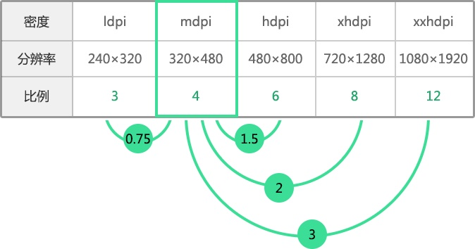
/**
*
* @param context 上下文
* @param values dp值
* @return
*/
public static int dp2px(Context context, int values) {
float scale = context.getResources().getDisplayMetrics().density;
return (int) (values * scale + 0.5f);
}
public static int px2dip(Context context, float pxValue) {
float scale = context.getResources().getDisplayMetrics().density;
return (int) (pxValue / scale + 0.5f);
}
public static int px2sp(Context context, float pxValue) {
float fontScale = context.getResources().getDisplayMetrics().scaledDensity;
return (int) (pxValue / fontScale + 0.5f);
}
public static int sp2px(Context context, float spValue) {
final float fontScale = context.getResources().getDisplayMetrics().scaledDensity;
return (int) (spValue * fontScale + 0.5f);
}
以dp2px为例，这里有一个小细节，根据上面的推导，return的结果应该是 (int) (values * density)，而结果会+0.5f再强转，原因是浮点型强转整型过程直接回去除小数部分，+0.5f相当于四舍五入的过程（小数部分大与0.5的+0.5f后会进一位）,结果显得更加精确。
二、资源文件夹之间的关系
Android开发中，UI一般会制作多种图片素材，根据素材的分辨率大小，放在如下几个文件夹中：
ldpi（120dpi）
mdpi（160dpi）
hdpi（240dpi）
xdpi（320dpi）
xxdpi（480dpi）
xxxdpi（640dpi）
以mdpi（160dpi）为基准
可以看出系数比例关系：0.75：1：1.5：2：3：4
(一) 资源文件的加载
很明显420dpi不属于上述文件分类中的任何一个，安卓手机分辨率千奇百怪，因此，上述文件夹不是指定具体的分辨率，而是一个范围，如ldpi（value<120dpi），mdpi（120dpi<value<160dpi），以此类推，420dpi会加载xxdpi中的资源文件
验证一下：
这里有两张图片
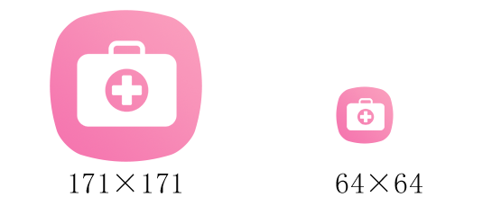
将171×171放入xxdpi中，64×64放入xdpi中，用Nexus5X进行测试，应该加载哪个文件夹中的资源呢？
<?xml version="1.0" encoding="utf-8"?>
<RelativeLayout xmlns:android="http://schemas.android.com/apk/res/android"
android:layout_width="match_parent"
android:layout_height="match_parent"
android:orientation="vertical">
<ImageView
android:layout_width="wrap_content"
android:layout_height="wrap_content"
android:layout_centerInParent="true"
android:src="@mipmap/icon_life" />
</RelativeLayout>
结果如图：
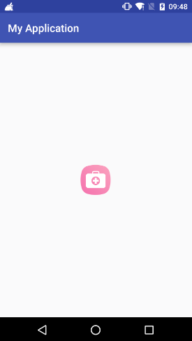
这个到底是加载的哪个文件夹的图片呢，加载的是171还是64？我也不知道。那么我调换一下，将171×171放入xdpi中，64×64放入xxdpi中，如果图片变小了，那么证明，必然加载的是xxdpi文件夹的图片了。
结果如图：
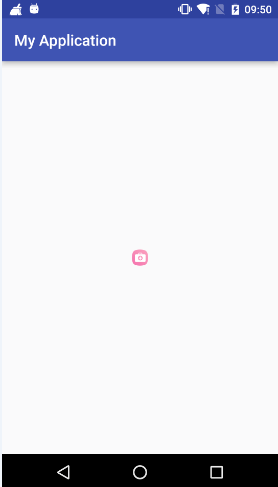
(二) 建议在xdhpi中作图
安卓手机有这么多屏幕，我到底依据哪种屏幕作图呢？没有必要为不同密度的手机都提供一套素材，大部分情况下，一套就够了。
现在手机比较高的分辨率是1080×1920，你可以选择这个尺寸作图，但是图片素材将会增大应用安装包的大小。并且尺寸越大的图片占用的内存也就越高。如果你不是设计ROM，而是做一款应用，我建议大家用PS在720×1280的画布中作图。这个尺寸兼顾了美观性、经济性和计算的简单。美观性是指，以这个尺寸做出来的应用，在720×1280中显示完美，在1080×1920中看起来也比较清晰；经济性是指，这个分辨率下导出的图片尺寸适中，内存消耗不会过高，并且图片文件大小适中，安装包也不会过大；计算的简单，就是1dp=2px啊，多好计算啊！
做出来的图片，记着让界面工程师放进drawable-xhdpi的资源文件夹中。
xhdpi (320dpi, 2x) 同iOS @2x 750x1334
xxdpi (480dpi, 3x) 同iOS @3x 1242x2208（除以1.15，则等比缩放到android的1080*1920)
淘宝选择2x标注，3x切图，具体讲解如下：http://blog.csdn.net/zx_android/article/details/51150156
(三) 屏幕的宽高差异
在720×1280中作图，要考虑向下兼容不同的屏幕。通过计算我们可以知道，320×480和480×800的屏幕宽度都是320dp，而720×1280和1080×1920的屏幕宽度都是360dp。它们之间有40dp的差距，这40dp在设计中影响还是很大的。如下图蝴蝶图片距离屏幕的左右边距在320dp宽的屏幕和360dp宽的屏幕中就不一样。
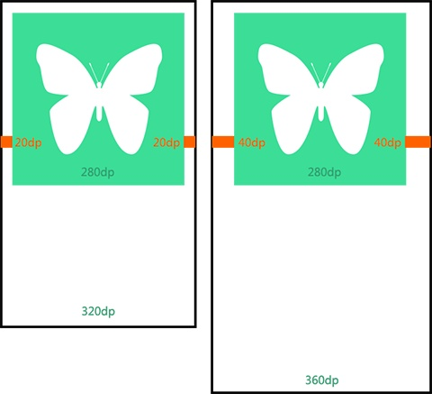
如果想消除这些比例差异，可以通过添加布局文件来实现。一般情况下，布局文件放在layout文件夹中，如果要单独对360dp的屏幕进行调整，你可以单做做一个布局文件放在layout-w360dp中；不过，最好是默认针对360dp的屏幕布局（较为主流），然后对320dp的屏幕单独布局，将布局文件放到layout-w320dp中；如果你想对某个特殊的分辨率进行调整，那么你可以将布局文件放在标有分辨率的文件夹中，如layout-854×480。
(四) 几个资源的文件夹
在720×1280中做了图片，要让开发人员放到drawable-xhdpi的资源文件夹中，这样才可以显示正确。个人认为仅提供一套素材就可以了，可以测试一下应用在低端手机上运行是否流畅，如果比较卡顿，可以根据需要提供部分mdpi的图片素材，因为xhdpi中的图片运行在mdpi的手机上会比较占内存。
以应用图标为例，xhdpi中的图标大小是96px，如果要单独给mdpi提供图标，那么这个图标大小是48px，放到drawable-mdpi的资源文件夹中。各个资源文件夹中的图片尺寸同样符合ldpi:mdpi:hdpi:xhdpi:xxhdpi=3:4:6:8:12的规律。
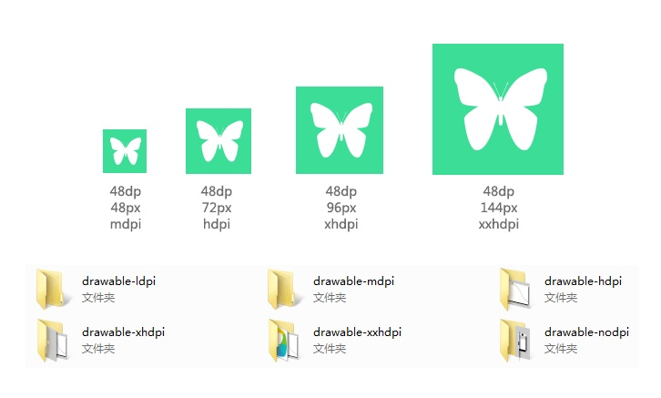
如果你把一个高2px的分割线素材做成了9.png图片，你想让细线在不同密度中都是2px，而不被安卓根据密度进行缩放，怎么办？你可以把这个分割线素材放到drawable-nodpi中，这个资源文件夹中的图片，将按照实际像素大小进行显示，而不会被安卓根据密度进行缩放。即在mdpi中细线是2px（2dp），在xhdpi中细线是2px（1dp）。
(五) 资源加载优先级
Google官方文档显示如下：
如果有最匹配的资源（e.g. 设备是HDPI，存在hdpi的资源），则删除其他的资源。
如果没有最佳匹配资源，优先匹配更高dpi的资源，缩小合适的比例以后使用（e.g. 设备是HDPI，未能找到hdpi的资源，但是有xhdpi的资源，则把XHDPI的资源缩小的3/4以后使用），并排除其他的资源（Google解释说，因为执行缩小操作比执行放大操作更加方便，所以高dpi资源优先与低dpi资源，不过，个人认为对于大部分图片来说，大图缩小造成的失真应该是小于小图放大造成的失真）。
如果没最佳匹配的资源，也不存在更高dpi的资源，则使用dpi更低的资源，并放大合适的比例以后使用（e.g. 设备为HDPI，未能找到hdpi以及更高的资源，单存在mdpi的资源，则把mdpi的资源放大到3/2以后使用），并删排除其他资源。
原则上来说，dalvik优先使用符合设备dpi的资源，其次是dpi较低的高dpi资源，再次是dpi较高的高dpi资源，最后采用nodpi的资源，由此，根据设备自身的dpi的不同，不同dpi资源的优先级是有差异的（忽略mdpi&hdpi）:
设备dpi优先级顺序（由高到低）
tvdpi tvdpi>hdpi>xhdpi>xxhdpi>mdpi>default>ldpi>nodpi
hdpi hdpi>xhdpi>xxhdpi>tvdpi>mdpi>default>ldpi>nodpi
xhdpi xhdpi>xxhdpi>hdpi>tvdpi>mdpi>default>ldpi>nodpi
xxhdpi xxhdpi>xhdpi>hdpi>tvdpi>mdpi>default>ldpi>nodpi
另外，除了nodpi以外，使用其他dpi资源前，还需要根据缩放比进行缩小/放大操作。
(六) 项目实战
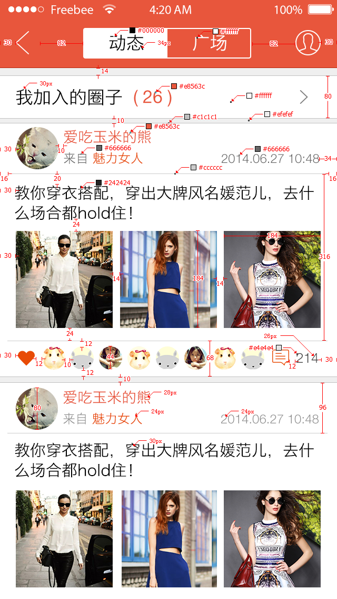
类似上图是美工标注后的高保真图，分辨率为640*1136，对应到安卓为720p（会有细微偏差），ios为2@，安卓开发同学拿到图，下面的工作就比较简单了。
- 单位换算：只需要将上面的px/2，则得到代码中距离需要的dp，字体大小需要的sp。
- 切图处理：美工的切图一律放入xhdpi文件即可
这里我举两个适配的例子帮助大家更好的理解。
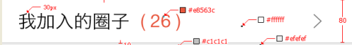
【代码适配】上图大家觉得怎么布局比较好？
解答：【我加入的圈子】左边空出固定距离，右边【>】空出固定距离，中间铺满屏幕，这样可以让360dp甚至更大的手机，不至于让页面内容缩在中间一小块。再看下下面的布局：
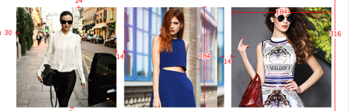【动态布局适配】上图又怎么布局呢？做到各种机型适配。
我在项目中的做法是，用（屏幕的宽度（像素）-两边的间距-中间间距）/3，这样得到每个图片的宽度，然后图片的高度设置成高图片的宽度相等（当然也可以重写view，自动设置宽等于高）
代码如下：LinearLayout.LayoutParams linearParams = (LinearLayout.LayoutParams)pic.getLayoutParams(); linearParams.width =(context.getResources().getDisplayMetrics().widthPixels-DisplayUtil.dip2px(context, 44)) / 3;
linearParams.height = linearParams.width;
pic.setLayoutParams(linearParams); //使设置好的布局参数应用到控件【比重适配】weight也可以搞定了！的确，可以用比重去做，三个图片各占比为1，再调整下边距，但是高度怎么办，前面说过上，可以重写view,让这个view的高跟宽度相等，这种方式也可以。
【另类适配】 应该大家有看到有人提到过纯代码适配，就在在Java代码中动态设置每个view的宽跟高，宽跟高是通过计算得出的。比如设计图是640 * 1136，这个view的宽在640的设计图上是20px。所以有同学会通过DisplayMetrics metrics = res.getDisplayMetrics();screenWidth = metrics.widthPixels screenHeight = metrics.heightPixels;拿到当前屏幕的宽跟高，如果当前手机屏幕是720 * 1280，及screenWidth =720，screenHeight =1280，那么当前的view的宽度等于screenWidth /640 * view的宽度，这样的确非常完美，每部手机都可以等比的缩放。但是代码维护跟开发难度就是成倍的增加，不建议使用。
【不同的layout适配】 在res目录下创建不同的layout文件夹，比如：layout-640x360、layout-800x480……所有的layout文件在编译之后都会写入R.java里，而系统会根据屏幕的大小自己选择合适的layout进行使用。这种现在基本不会有人这么适配，不展开讨论。
【dimen尺寸资源文件的使用】dimen.xml在values文件夹下面
<resources> <!-- Default screen margins, per the Android Design guidelines. -->
<dimen name="btn_width">16dp</dimen>
<dimen name="btn_height">16dp</dimen>
</resources>
布局中的使用：
<Button
android:text="@string/test_dimen1"
android:id="@+id/Button01"
android:layout_width="@dimen/btn_width"
android:layout_height="@dimen/btn_height"/>
文件夹含义：
values-v11 ——-API 11+代表android 3.0 +，意思是在API11设备上，该目录下的dimens.xml代替res/values/dimens.xml
values-480x320、values-800x480等 ————意思是在不同分辨率下，该目录下的dimens.xml代替res/values/dimens.xml
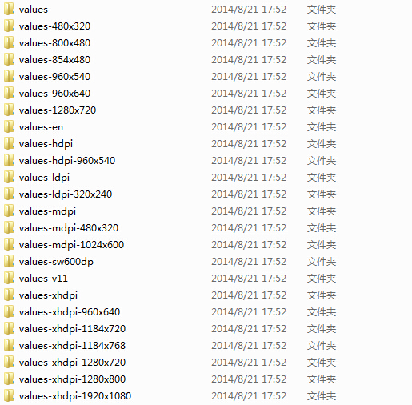